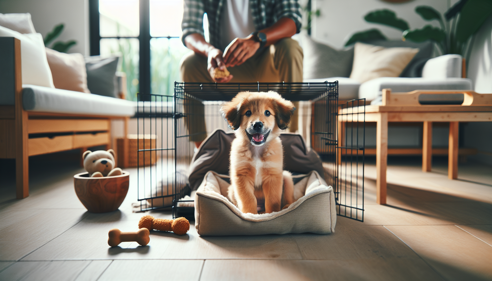

Bringing home a new puppy is exciting, adorable, and often a little overwhelming. Between potty accidents, midnight whining, and the challenge of teaching your puppy where to settle, many new dog owners wonder where to start. One of the most helpful tools you can use is the crate. When introduced properly, a crate is not a punishment. It is a safe, cozy space that can support house training, prevent destructive chewing, and help your puppy learn how to relax.
Crate training works best when it is done with patience, consistency, and positive reinforcement. Science-backed dog training principles show that puppies learn fastest when good things happen around the behaviors we want. That means your puppy should learn that the crate predicts comfort, treats, naps, meals, and calm downtime.
In this complete guide, you will learn how to crate train a new puppy step by step, how long puppies can stay in the crate, what to do about whining, and how to avoid common mistakes. Whether you are a first-time puppy parent or adopting a rescue puppy who needs structure and security, this guide will help you build a strong foundation.
A properly used crate can make life easier for both you and your puppy. Dogs are denning animals to some extent, and many puppies naturally enjoy having a smaller, predictable resting space. The crate becomes their bedroom, not a place of isolation.
Supports potty training: Puppies are less likely to eliminate where they sleep, which helps build bladder control and a regular bathroom routine.
Prevents unsafe chewing: Young puppies explore with their mouths and can easily get into electrical cords, shoes, furniture, or toxic household items.
Encourages rest: Overtired puppies often become wild, nippy, and unable to settle. A crate helps create nap routines.
Builds independence: Gradual crate training teaches your puppy that being alone for short periods is safe.
Makes travel and vet care easier: Dogs who are comfortable in confinement usually cope better with car crates, boarding, grooming, and recovery after medical procedures.
The key is this: the crate should be associated with safety and calm, never fear. If your puppy panics in the crate, the goal is not to force it. The goal is to slow down and rebuild positive associations.
The best crate is one that is safe, properly sized, and comfortable without being overly stimulating. Common options include wire crates, plastic airline-style crates, and soft-sided crates. For most puppies, a wire crate with a divider panel is practical because it can grow with your dog.
Your puppy should have enough room to stand up, turn around, and lie down comfortably. If the crate is too large, your puppy may sleep in one corner and potty in another, which can slow house training. If it is too small, it will feel cramped and stressful.
To set up the crate:
Place it in a quiet but not isolated part of your home, such as the living room during the day.
At night, many puppies do best with the crate near your bed for reassurance and easier potty trips.
Add safe bedding if your puppy is not likely to shred and swallow it.
Include a puppy-safe chew toy or food-stuffed toy for positive engagement.
Keep the environment calm and comfortable, not crowded with too many items.
If your puppy is a rescue or seems sensitive to new environments, cover part of the crate with a light blanket to create a den-like feeling, but always ensure good airflow and monitor your puppy's comfort.
The fastest way to ruin crate training is to shut the door too early and hope your puppy just gets used to it. Instead, teach the crate gradually. Think of it as building trust one small success at a time.
Step 1: Let your puppy explore. Leave the crate door open and toss a few treats inside. Allow your puppy to go in and out freely. Praise calmly when they step inside.
Step 2: Feed meals near and then in the crate. Start by feeding just outside the crate, then at the entrance, then farther inside. Many puppies quickly learn that the crate is a great place to be when meals happen there.
Step 3: Create short positive sessions. Encourage your puppy into the crate with a treat or toy, then let them come back out. Repeat several times. Keep sessions short and upbeat.
Step 4: Close the door briefly. Once your puppy is comfortable going in, close the door for just a few seconds while they enjoy a treat. Open it before they become upset. Gradually increase the duration.
Step 5: Add distance. Sit nearby at first, then stand up, take a step away, and come back. Slowly build to leaving the room for very short periods.
Step 6: Practice when your puppy is calm. The best times for crate training are after play, after potty breaks, and when your puppy is naturally sleepy.
Reward calm behavior. If your puppy lies down quietly, that is exactly what you want. Soft praise and occasional treats help reinforce the habit of settling.
Puppies do best with routine. A predictable daily schedule helps them understand when to eat, play, potty, nap, and sleep. Crate time should be balanced with plenty of bathroom trips, social interaction, training, and exercise appropriate for your puppy's age.
A simple puppy routine may look like this:
Wake up and go outside immediately for a potty break
Breakfast, then another potty trip
Short play and training session
Supervised free time
Crate nap with a safe chew
Potty break immediately after waking
Repeat throughout the day with meals, play, training, and naps
Calm evening routine and final potty break before bed
As a general guideline, young puppies can only hold their bladder for short periods. Many owners use the rough rule of one hour per month of age during the day, though individual puppies vary. A two-month-old puppy may need frequent breaks every 2 hours or even more often when awake, active, or just after eating and drinking. Overnight, some puppies can last a little longer, but many still need one or more potty trips.
Do not expect a young puppy to stay crated for a full workday. Long confinement is not fair or effective. If you work away from home, arrange for a dog walker, pet sitter, trusted friend, or a safe puppy-proofed area for part of the day.
Some whining is normal, especially during the first few nights. Your puppy has left their litter, entered a new environment, and may be confused. The goal is to respond thoughtfully, not emotionally.
First, ask why your puppy is whining. Common reasons include needing to potty, feeling lonely, being overtired, or being crated too long. If it has been a while since the last bathroom trip, take your puppy out calmly and quietly. Keep it boring: potty, praise softly, and back to bed.
If you are confident your puppy does not need the bathroom, avoid rewarding frantic behavior by opening the crate only when they are escalating. Instead:
Wait for a brief pause in the whining before opening the door.
Keep nighttime interactions calm and low-key.
Try placing the crate closer to you at night.
Use a consistent bedtime routine.
Make sure your puppy has had enough daytime enrichment and exercise.
Never punish whining by yelling, banging on the crate, or using aversive tools. That increases stress and can create lasting negative associations. If your puppy is showing intense panic, drooling, injuring themselves, or screaming continuously, pause the process and consult a qualified, force-free trainer or veterinary behavior professional.
Crate training usually goes more smoothly when owners avoid a few frequent pitfalls.
Using the crate as punishment: If every trip to the crate follows scolding or isolation, your puppy will learn to dislike it.
Moving too fast: Closing the door before your puppy is comfortable can create fear.
Leaving your puppy too long: Over-crating can lead to accidents, stress, and frustration.
Ignoring potty needs: Puppies cannot learn bladder control if they are physically unable to hold it.
Only crating when you leave: Practice crate time while you are home too, so the crate does not predict abandonment.
Not meeting your puppy's needs first: A puppy who is hungry, under-exercised, lonely, or bursting to pee is unlikely to settle.
Remember that crate training is part of a bigger picture. Your puppy also needs socialization, gentle training, enrichment, sleep, and secure attachment. The crate supports those goals, but it does not replace them.
The crate is a tool, not a lifelong requirement for every dog. Many dogs continue to enjoy their crate as a sleeping spot well into adulthood, especially if it has always been a comfortable retreat. Others eventually earn more freedom as they mature.
You can start testing more freedom when your puppy is reliably potty trained, can settle calmly outside the crate, and is not chewing or getting into trouble when supervised. This often happens gradually. You might begin with a puppy-proofed room, a pen, or short periods loose in the house after exercise and a potty break.
There is no prize for getting rid of the crate quickly. If your puppy likes it and it helps everyone succeed, you can keep using it thoughtfully.
Crate training a new puppy is one of the most useful early skills you can teach, but success depends on how you teach it. Go slowly, create positive associations, stick to a routine, and keep your expectations age-appropriate. A crate should help your puppy feel safe, not trapped. With consistency and kindness, most puppies learn to rest comfortably in their crate, making potty training, sleep, and daily life much easier.
If you are patient during these first few weeks, you are not just teaching your puppy to tolerate a crate. You are teaching emotional regulation, independence, and trust. Those lessons can benefit your dog for years to come.
Get our full Dog Training eBook series — new titles added weekly.